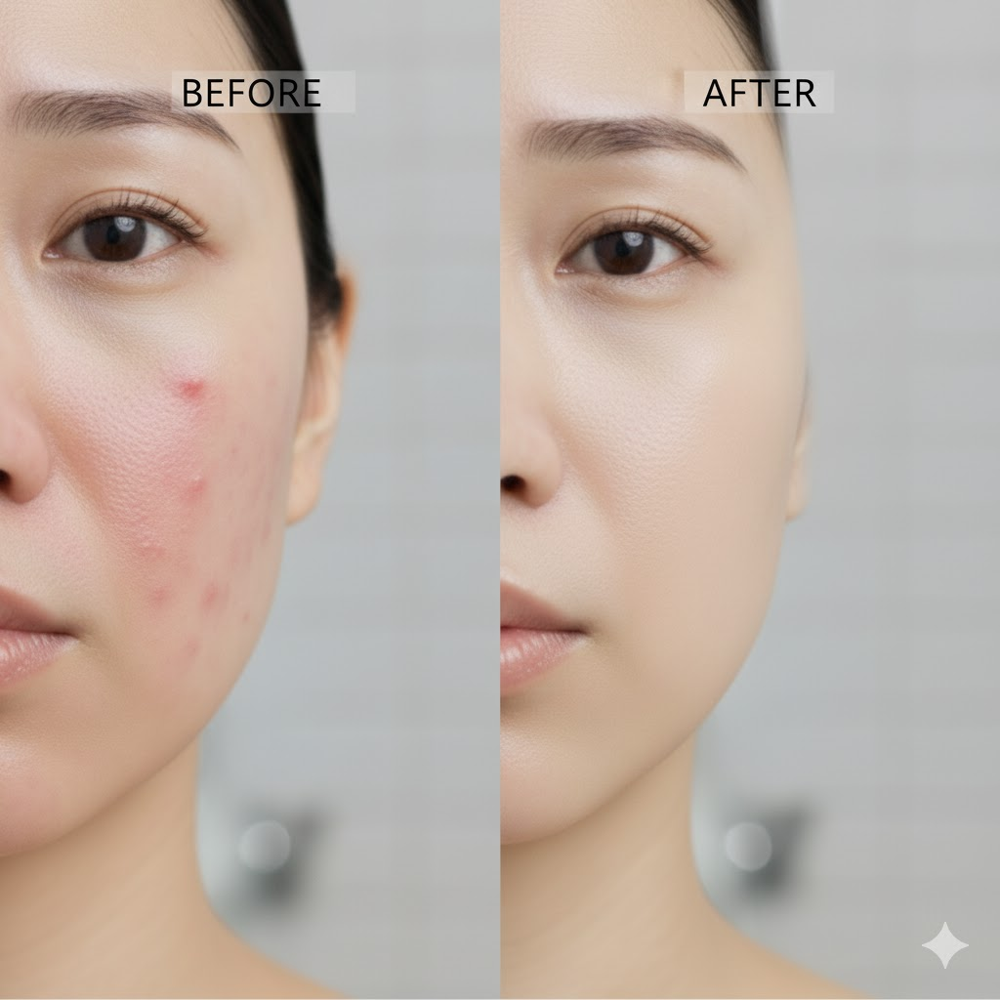

Boost Facial Wash（ブーストフェイシャルウォッシュ）
【代替品: ニュートロジーナ ハイドロブースト フェイシャルクレンザー】
リンク
ハーブピーリング配合・幹細胞エキス・シワ・ハリ不足対策。
泡パック可能なエイジングケア用クレイ洗顔。
- エイジングケア用泡洗顔／5分間泡パック
- 年齢肌・くすみ・乾燥・ハリ不足向け
- 100g／約3〜4か月分
SEA-ZEN フェイスソープ 150ml
リンク
北海道産昆布エキス使用、弱アルカリ性・無添加
敏感肌対応のオーガニック洗顔。
- 海の栄養素で肌の潤いを保つ
- 敏感肌・乾燥肌にやさしい処方
- 毎日の洗顔に最適

長年吹き出物に悩まされていました。海外製ピーリングや強い薬を使っても
一時的に減るだけで、赤みが戻る繰り返しでした。
皮膚科医に紹介された「ノブ A アクネフォーム洗顔料」を使い始めてから
肌の赤みが落ち着き、肌質も徐々に改善。
人前でも恥ずかしくない程度になり、マスクで隠す必要もなくなりました。
なかなか合う商品に出会えない方はぜひ試してみてください。
【斎藤ようこさん (26歳・仮名)】
Acno ケアクリーム 薬用ジェル
リンク
にきびの原因となる余分な皮脂や汚れをすっきり落としつつ、
肌に必要なうるおいを保持する医薬部外品。
- 1〜2cmを泡立てて洗顔
- 洗顔料の残りやすい小鼻周りや髪の生え際も注意してすすぐ
- にきび肌用・敏感肌向け
当サイトお勧めする敏感肌に最適なオーガニックスキンケア!
「シェルゥーム」
敏感肌でも使える国産ボタニカルスキンケア【アルファピニ28】トライアルセット
早速試してみる!!➡ 世界初の植物エキス「アオノクマタケラン」配合スキンケア【アルファピニ28】